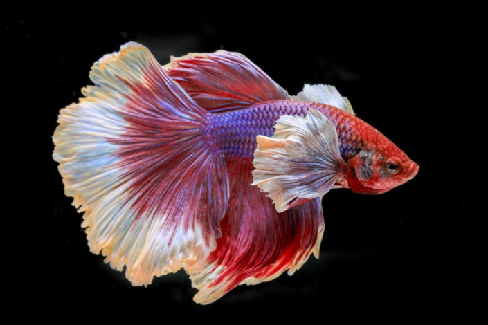

Peces de acuario!
Los peces son los animales perfectos para tener como mascota en casa en un acuario, ya que no necesitan mucho espacio, se pueden elegir especies que no requieran mucha inversi n, no tienen muchos cuidados y son perfectos para que ni os de todas las edades adquieran la responsabilidad de cuidar de una mascota. La variedad es otro punto muy a favor ya que, existen una gran cantidad de peces que resultan muy llamativos tanto en colores como en formas. Adem s, los hay de todos los tama os y con cuidados sencillos o m s espec ficos para cuidadores expertos.
Pez Beta
Originarios de Tailandia, los bettas son peces casi hipn ticos que se han puesto de moda tras aparecer como fondo de pantalla en unos conocidos tel fonos m viles. La cr a selectiva ha hecho que se consigan llamativos colores que invaden sus largas aletas. Eso s , cada pez Betta necesita un acuario de 20 litros y no se pueden juntar machos por ser muy territoriales, por este motivo el pez Betta vive bien siendo un pez solitario. Los bettas son peces carnivoros, comen fundamentalmente insectos y larvas de insecto, por lo que una dieta con solo plantas acabar por enfermarles a largo plazo.
Pez Disco
Procedentes del Amazonas, los impresionantes peces Disco son los protagonistas de los acuarios. Su forma, tama o y colorido cuerpo los hacen muy especiales, pero tambi n son muy delicados, por lo que hay que ser experto antes de hacerse con un pez Disco. Como curiosidad, adem s de tener una variedad crom tica muy amplia, tienen 9 rayas verticales en el cuerpo (no siempre visibles) que var an seg n su estado emocional, volvi ndose m s intensas cuando se estresan. Al ser peces tropicales, necesitan vivir en acuarios con temperaturas de entre 28 y 30 . Tambi n necesitan convivir en grupos grandes.
Pez Angel
La peculiar forma de los peces ngel han hecho que sean muy populares: aplanados, casi romboidal por sus grandes aletas y muy parecidos a los de agua salada. Son animales grandes y les gusta estar acompa ados, por lo que necesitan acuarios altos de al menos medio metro de altura. Se debe tener un acuario maduro, es decir que lleve tiempo generando un habitat con presencia de bacterias beneficiosas para la vida de los peces. Si acabas de empezar con tu acuario, no es recomendable meter peces ngel
Pez Tetra
Estos peces son los m s valorados en el paisajismo acu tico porque sus variados colores siempre combinan en cualquier acuario plantado. Suelen nadar agrupados en bancos y eso favorece esa belleza decorativa.

Pez Gato Cristal
Estos peces son unos de los m s especiales y llamativos. Su raro cuerpo es transparente, por lo que se puede observar su esqueleto y algunos rganos internos. Esto permite que se camufle f cilmente, lo que hace que le gusten los acuarios plantados grandes con muchos recovecos. Son sensibles a los cambios de temperatura y no deben estar nunca solos, necesitan vivir con m s miembros de su especie. Deber s mantener el acuario limpio y en perfecto estado, ya que son propensos a ciertas enfermedades.
Killis
Los Killis son los peces perfectos para principiantes porque son sumamente resistentes. Como no son muy grandes (pero s vistosos) se pueden tener 2 o 3 Killis por cada 20 litros. Pero ojo! Estos bonitos peces saltan y pueden salirse del acuario, as que conviene tenerlo bien tapado.

Cuidados b sicos de los peces
- El principal cuidado de los peces es conocer las caracter sticas de cada especie e informarse muy bien de los cuidados espec ficos que necesitan.
- El siguiente punto a tener en cuenta es, si se quieren juntar varias especies, cerciorarse de que su car cter permite hacerlo.
- El espacio disponible, hay que asegurarse de que cada pez cuenta con el tama o de acuario adecuado.
- La alimentaci n tambi n es crucial ya que hay peces que prefieren vegetales (algas principalmente) y otros que necesitan comida viva. Lo mismo ocurre con la cantidad, por eso es importante pedir informaci n al profesional de la tienda en el momento de la adquisici n del pez.
- Hay especies que necesitan calentador de agua y/o bomba de ox geno porque requieren unas condiciones especiales en el acuario. Con estos casos hay que ser muy cuidadosos.
- Los acuarios necesitan luces porque no conviene que reciban luz directa del sol.
- La limpieza del agua en particular y del acuario en general es otro de los cuidados b sicos de los peces que m s hay que tener en cuenta. Usa productos espec ficos y hazlo peri dicamente.